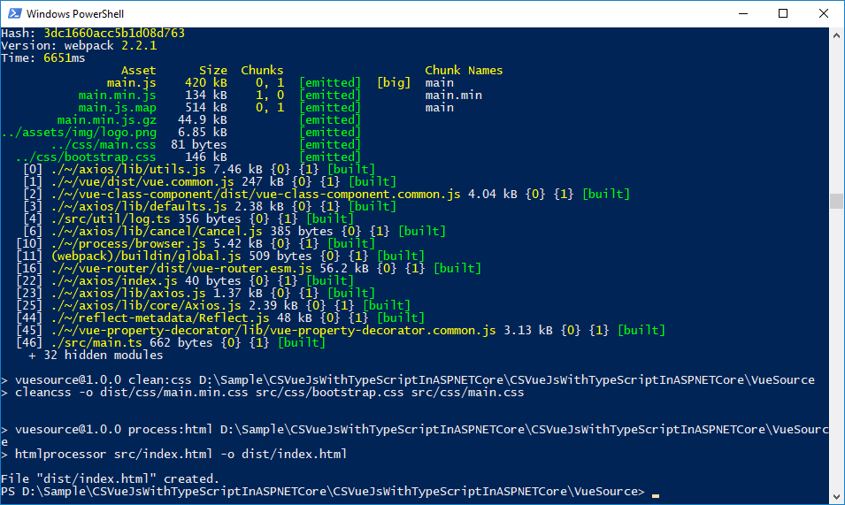

How to setup Vue.js with TypeScript in ASP.NET Core
How to setup Vue.js with TypeScript in ASP.NET Core
Introduction
This sample demonstrates how to setup Vue.js with TypeScript in ASP.NET Core.
Sample prerequisites
• Visual Studio 2017 or above. [Visual Studio Home Page]
• Visual Studio enabled ASP.NET Core develop component.
• Node.js 6.0 and Npm 3.0 or above.
• Vue-cli has installed.
npm install –g vue-cli
Building the sample
• Input %solution folder%/VueSource/ in command line.
• Input npm install to install dependency package.
• Input npm run build to build the vue project, and then you can find the compilation file in %solution folder%/VueSource/dist.
• Copy all the files to wwwroot folder in ASP.NET MVC project.
• Copy the content in index.html to Views/Home/index.cshtml.
• Open the solution file “CSVueJsWithTypeScriptInASPNETCore.sln” using Visual Studio.
• Press F6 Key to build the ASP.NET Mvc project.
Running the sample
• Use Visual Studio to open the sample solution CSVueJsWithTypeScriptInASPNETCore.sln, then press F5 Key or select Debugging from the menu.
• When the project is running, you will see the below page in browser.

For setup a new project
• First, install the vue-cli.
Input npm install –g vue-cli in command line.
• Initialize the vue project by template vue-webpack-typescript.
• Create a folder and enter the folder by command line.
• Input vue init ducksoupdev/vue-webpack-typescript VueSource.
• Input the project name, project description, etc.
• Enter the project folder by command line.
• Input npm install to install dependency packages.

• And then, Input npm run build to build the vue project.

• When the building is finished, you can find the compilation file in %solution folder%/VueSource/dist.


• Create a new empty ASP.NET Core project, copy all the files in dict folder and paste them to the wwwroot folder in ASP.NET Core project.

• Add the static files support and mvc.
public class Startup
{
public void ConfigureServices(IServiceCollection services)
{
services.AddMvc();
}
public void Configure(IApplicationBuilder app, IHostingEnvironment env, ILoggerFactory loggerFactory)
{
loggerFactory.AddConsole();
if (env.IsDevelopment())
{
app.UseDeveloperExceptionPage();
}
app.UseStaticFiles();
app.UseMvcWithDefaultRoute();
}
}
public class Startup { public void ConfigureServices(IServiceCollection services) { services.AddMvc(); } public void Configure(IApplicationBuilder app, IHostingEnvironment env, ILoggerFactory loggerFactory) { loggerFactory.AddConsole(); if (env.IsDevelopment()) { app.UseDeveloperExceptionPage(); } app.UseStaticFiles(); app.UseMvcWithDefaultRoute(); } }
• Create Controller and views.

• Copy content from wwwroot/index.html to Views/Home/Index.cshtml
• Press F5 Key to run project.
More information
https://code.msdn.microsoft.com/How-to-setup-Vuejs-with-ae2b05b7/https://vuejs.org/
https://code.msdn.microsoft.com/How-to-setup-Vuejs-with-ae2b05b7/https://github.com/vuejs/vue-cli
Microsoft All-In-One Code Framework is a free, centralized code sample library driven by developers' real-world pains and needs. The goal is to provide customer-driven code samples for all Microsoft development technologies, and reduce developers' efforts in solving typical programming tasks. Our team listens to developers’ pains in the MSDN forums, social media and various DEV communities. We write code samples based on developers’ frequently asked programming tasks, and allow developers to download them with a short sample publishing cycle. Additionally, we offer a free code sample request service. It is a proactive way for our developer community to obtain code samples directly from Microsoft.